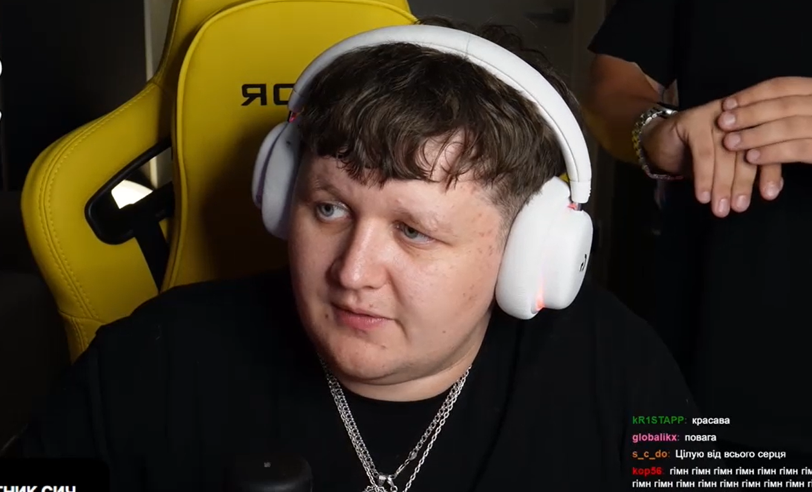
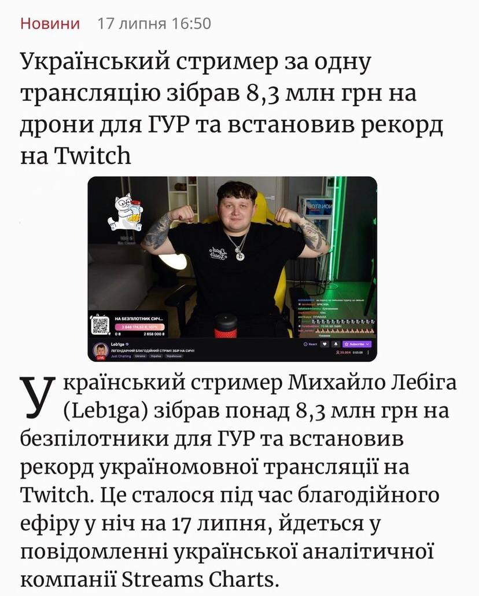
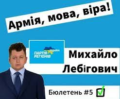

ПРО МИХАЙЛА
Михайло Лебіга — український блогер та стрімер із ніком Leb1ga, відомий перш за все тим, що регулярно збирає на платформі рекордні збори на потреби ЗСУ, ГУР, та інших підрозділів, які зараз боронять незалежність України. Нещодавно, Михайло встановив особистий та рекорд україномовних стрімів!
ПРО ДОСЯГНЕННЯ
-

МЕДІАСФЕРА
Михайло вже давно займається розвитком української медіасфери та має досить великий та вагомий медіаресурс. Instagram, Twitch, TikTok, Telegram - платформи на яких Михайло займається своєю творчою діяльністю. Його гумор, відвертість, чесність та харизма збирає велику кількість аудиторії, завдяки якій підписники та сам Михайло роблять дива та неможливе в насправді нелегкий час для нашої країни.
-

ВОЛОНТЕРСТВО
Правильно використовуючи свої сили та ресурс, Михайло Лебіга неодноразово робив та закривав збори для наших військових. Загальні збори за період повномасштабного вторгнення росії складають десятки мільйонів гривень! Завдяки цьому наші воїни стоять непохитно та до останнього захищаючи нас від загарбника.
Нещодавно, Михайло зібрав рекордну суму - 8.3 мнл гривень.Цієї суми вистачило на три розвідувальних безпілотники «Сич» для Головного управління розвідки. Кошти, які залишились після покупку БпЛА для ГУР МОУ, спрямували на придбання автівки для одного з підрозділів Сил оборони. -

ПОЛІТИЧНА ДІЯЛЬНІСТЬ
Михайло Лебіга або ж під політичним псевдонімом Лебігови - прямо можна сказати, що це жарт, який вийшов з-під контролю. Підписники активно підхопили жарт та перетворюють все в реальність. Білборди, згадування у Верховній раді, мерчендайзинг, тату на тілі - це одні з діяльностей підписників (елкторату Михайла Лебіговича), які підтримують кандидатуру Михайла. Сподіваємось, що політична діяльність Лебіговича продовжиться та переросте в ще більші дива для нашої України.
Народу потрібні такі люди!
За Лебіговича! За народ! За Україну! За ЗСУ!